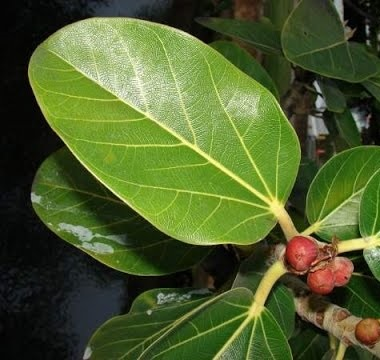
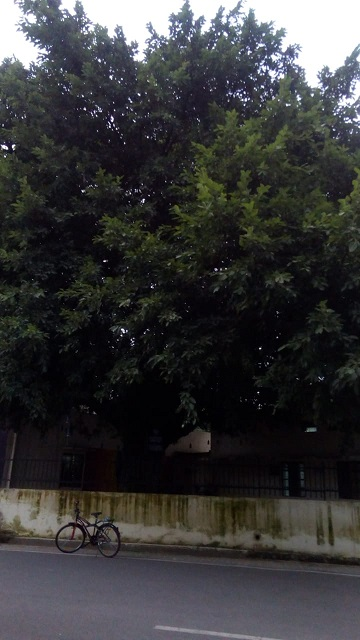

Banyan Tree
Scientific name = Ficus benghalensis
It is the national tree of the Republic of India. Like other fig species, banyans bear their fruit in the form of a structure called a "syconium".
The syconium of Ficus species supply shelter and food for fig wasps and the trees depend on the fig wasps for pollination. The seeds are small, and because
most banyans grow in woodlands, a seedling that germinates on the ground is unlikely to survive. However, many seeds fall on the branches and stems of
other trees or on human edifices, and when they germinate they grow roots down toward the ground and consequently may envelop part of the host tree or
edifice. For this reason banyans bear the colloquial name "strangler fig". A number of tropical banyan species that compete for sunlight, especially of
the genus Ficus, exhibit this strangling habit.
In Hinduism, the leaf of the banyan tree is said to be the resting place for the god Krishna.The banyan tree is also considered sacred and is called vat vriksha